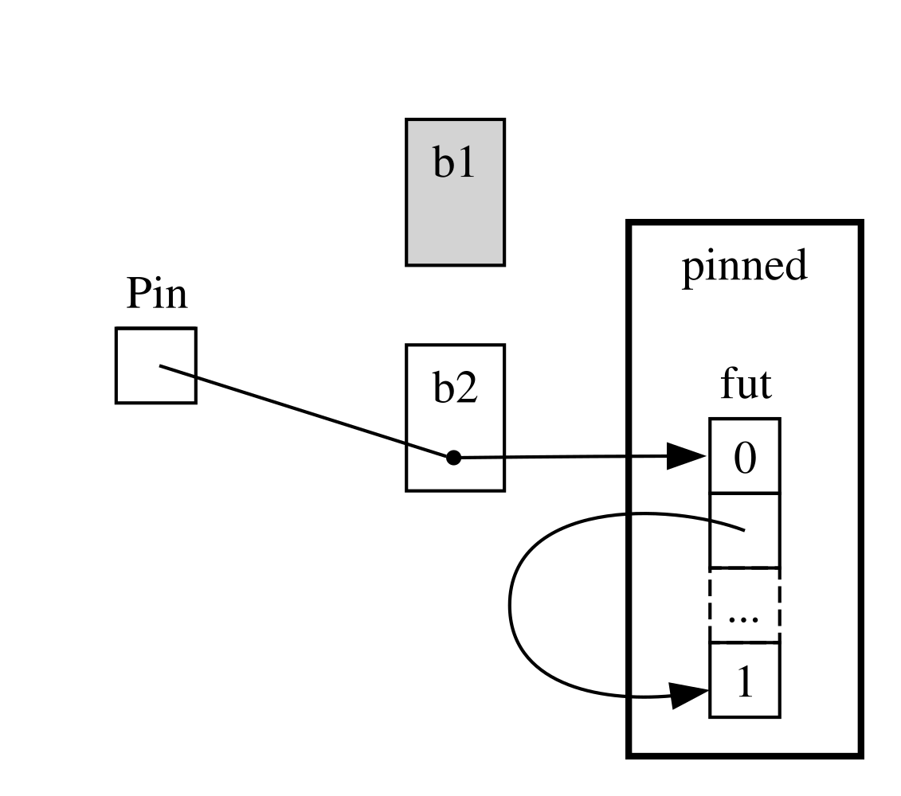

نگاهی دقیقتر به Traitهای Async
در طول این فصل، از ویژگیهای Future، Pin، Unpin، Stream، و StreamExt به روشهای مختلفی استفاده کردهایم. تاکنون، از ورود بیش از حد به جزئیات نحوه کارکرد یا چگونگی تطبیق آنها با یکدیگر اجتناب کردهایم، که برای بیشتر کارهای روزمره شما با Rust کافی است. با این حال، گاهی اوقات با موقعیتهایی مواجه میشوید که نیاز دارید کمی بیشتر از این جزئیات را بفهمید. در این بخش، به اندازهای به این موضوع میپردازیم که در این سناریوها کمک کند، در حالی که بررسی عمیقتر را به مستندات دیگر میسپاریم.
ویژگی Future
بیایید با بررسی دقیقتر نحوه عملکرد ویژگی Future شروع کنیم. در اینجا نحوه تعریف آن در Rust آمده است:
use std::pin::Pin;
use std::task::{Context, Poll};
pub trait Future {
type Output;
fn poll(self: Pin<&mut Self>, cx: &mut Context<'_>) -> Poll<Self::Output>;
}این تعریف Trait شامل چندین نوع جدید و همچنین نحوی است که قبلاً ندیدهایم، بنابراین بیایید قطعه به قطعه آن را بررسی کنیم.
ابتدا، نوع وابسته Output در ویژگی Future مشخص میکند که نتیجه future چه خواهد بود. این شبیه به نوع وابسته Item در ویژگی Iterator است. دوم، ویژگی Future همچنین متد poll را دارد که یک مرجع خاص Pin برای پارامتر self و یک مرجع متغیر به نوع Context میگیرد و یک Poll<Self::Output> بازمیگرداند. در ادامه درباره Pin و Context بیشتر صحبت خواهیم کرد. فعلاً بیایید روی چیزی که متد بازمیگرداند، یعنی نوع Poll، تمرکز کنیم:
pub enum Poll<T> {
Ready(T),
Pending,
}این نوع Poll شبیه به Option است. یک واریانت دارد که مقداری دارد، یعنی Ready(T)، و یکی که ندارد، یعنی Pending. با این حال Poll معنایی کاملاً متفاوت از Option دارد! واریانت Pending نشان میدهد که future هنوز کاری برای انجام دادن دارد، بنابراین فراخواننده باید بعداً دوباره بررسی کند. واریانت Ready نشان میدهد که Future کارش را تمام کرده و مقدار T در دسترس است.
نکته: بهندرت لازم است
pollرا مستقیماً فراخوانی کنید؛ اما اگر چنین نیازی پیش آمد، به یاد داشته باشید که برای بیشتر Futureها پس از بازگرداندنReadyنباید دوبارهpollرا فراخواند. بسیاری از Futureها اگر پس از آمادهشدن دوباره poll شوند، دچار panic میشوند. Futureهایی که poll دوبارهٔ آنها ایمن است، این موضوع را صریحاً در مستنداتشان میگویند. این رفتار بهIterator::nextشباهت دارد.
وقتی کدی را میبینید که از await استفاده میکند، Rust آن را در پشت صحنه به کدی که poll را فراخوانی میکند کامپایل میکند. اگر به لیست ۱۷-۴ که در آن عنوان صفحه برای یک URL واحد پس از حلشدن چاپ شد، نگاهی بیندازید، Rust آن را به چیزی که (اگرچه دقیقاً نه، اما تقریباً) شبیه به این است کامپایل میکند:
match page_title(url).poll() {
Ready(page_title) => match page_title {
Some(title) => println!("The title for {url} was {title}"),
None => println!("{url} had no title"),
}
Pending => {
// But what goes here?
}
}وقتی که future هنوز در حالت Pending است، چه کاری باید انجام دهیم؟ نیاز داریم به نوعی دوباره امتحان کنیم، و این کار را بارها تکرار کنیم، تا زمانی که future در نهایت آماده شود. به عبارت دیگر، نیاز به یک حلقه داریم:
let mut page_title_fut = page_title(url);
loop {
match page_title_fut.poll() {
Ready(value) => match page_title {
Some(title) => println!("The title for {url} was {title}"),
None => println!("{url} had no title"),
}
Pending => {
// continue
}
}
}اگر Rust دقیقاً این کد را کامپایل میکرد، هر await مسدودکننده (blocking) میشد—دقیقاً برعکس چیزی که میخواستیم! در عوض، Rust اطمینان حاصل میکند که حلقه بتواند کنترل را به چیزی واگذار کند که بتواند کار روی این future را متوقف کرده، روی futures دیگر کار کند، و سپس دوباره این یکی را بررسی کند. همانطور که دیدیم، این وظیفه یک runtime async است، و این برنامهریزی و هماهنگی یکی از وظایف اصلی آن است.
در بخش «ارسال داده میان دو task با استفاده از انتقال پیام» دربارهٔ انتظار برای rx.recv صحبت کردیم. فراخوانی recv یک future بازمیگرداند و await کردن آن future را poll میکند. اشاره کردیم که runtime آن future را متوقف نگه میدارد تا زمانی که یا با Some(message) آماده شود یا، هنگام بسته شدن کانال، با None. اکنون با درک عمیقتری از trait ـFuture و بهویژه Future::poll، میتوانیم ببینیم که این سازوکار چگونه کار میکند. runtime وقتی میداند future آماده نیست که Poll::Pending بازگردانده شود. در مقابل، runtime وقتی میداند future آماده است و آن را پیش میبرد که poll مقدار Poll::Ready(Some(message)) یا Poll::Ready(None) را بازگرداند.
جزئیات دقیق نحوه انجام این کار توسط یک runtime فراتر از محدوده این کتاب است، اما نکته کلیدی این است که مکانیک پایهای futures را ببینیم: یک runtime هر future که مسئول آن است را poll میکند و وقتی هنوز آماده نیست، future را دوباره به حالت خواب میبرد.
نوع Pin و Traitِ Unpin
در فهرست ۱۷-۱۳ با ماکروی trpl::join! منتظر سه Future ماندیم. بااینحال، اغلب مجموعهای مانند یک بردار داریم که تعداد Futureهای آن تا زمان اجرا معلوم نیست. در فهرست ۱۷-۲۳، همان سه Future را در یک بردار میگذاریم و تابع trpl::join_all را فراخوانی میکنیم. این نسخه هنوز کامپایل نمیشود.
extern crate trpl; // required for mdbook test
use std::time::Duration;
fn main() {
trpl::block_on(async {
let (tx, mut rx) = trpl::channel();
let tx1 = tx.clone();
let tx1_fut = async move {
let vals = vec![
String::from("hi"),
String::from("from"),
String::from("the"),
String::from("future"),
];
for val in vals {
tx1.send(val).unwrap();
trpl::sleep(Duration::from_secs(1)).await;
}
};
let rx_fut = async {
while let Some(value) = rx.recv().await {
println!("received '{value}'");
}
};
let tx_fut = async move {
// --snip--
let vals = vec![
String::from("more"),
String::from("messages"),
String::from("for"),
String::from("you"),
];
for val in vals {
tx.send(val).unwrap();
trpl::sleep(Duration::from_secs(1)).await;
}
};
let futures: Vec<Box<dyn Future<Output = ()>>> =
vec![Box::new(tx1_fut), Box::new(rx_fut), Box::new(tx_fut)];
trpl::join_all(futures).await;
});
}هر Future را درون یک Box قرار میدهیم تا مانند بخش «بازگرداندن خطا از run» در فصل ۱۲، آنها را به trait object تبدیل کنیم. Trait objectها اجازه میدهند Futureهای بینام و متفاوتی را که همگی Future را پیادهسازی میکنند، یک نوع در نظر بگیریم.
این موضوع شاید عجیب باشد: هیچکدام از بلوکهای async مقداری بازنمیگردانند، پس همگی Future<Output = ()> تولید میکنند. اما Future یک Trait است و کامپایلر برای هر بلوک async—حتی با خروجی یکسان—یک enum یکتا میسازد. همانگونه که دو struct متفاوت را نمیتوان مستقیماً در یک Vec گذاشت، enumهای متفاوت تولیدشده بهدست کامپایلر را نیز نمیتوان با هم مخلوط کرد.
سپس مجموعهٔ Futureها را به trpl::join_all میدهیم و نتیجه را await میکنیم، اما برنامه کامپایل نمیشود. بخش مرتبط پیام خطا چنین است:
error[E0277]: `dyn Future<Output = ()>` cannot be unpinned
--> src/main.rs:48:33
|
48 | trpl::join_all(futures).await;
| ^^^^^ the trait `Unpin` is not implemented for `dyn Future<Output = ()>`
|
= note: consider using the `pin!` macro
consider using `Box::pin` if you need to access the pinned value outside of the current scope
= note: required for `Box<dyn Future<Output = ()>>` to implement `Future`
note: required by a bound in `futures_util::future::join_all::JoinAll`
--> file:///home/.cargo/registry/src/index.crates.io-1949cf8c6b5b557f/futures-util-0.3.30/src/future/join_all.rs:29:8
|
27 | pub struct JoinAll<F>
| ------- required by a bound in this struct
28 | where
29 | F: Future,
| ^^^^^^ required by this bound in `JoinAll`
یادداشت خطا پیشنهاد میکند با ماکروی pin! مقادیر را pin کنیم؛ یعنی آنها را در نوع Pin بگذاریم تا تضمین شود در حافظه جابهجا نمیشوند. این کار لازم است چون dyn Future<Output = ()> در حال حاضر Traitِ Unpin را پیادهسازی نمیکند.
تابع trpl::join_all یک struct به نام JoinAll بازمیگرداند. آن struct نسبت به نوع F جنریک است، که مقید شده است trait ـFuture را پیادهسازی کند. await کردن مستقیم یک future با await، آن future را بهطور ضمنی pin میکند. به همین دلیل لازم نیست در هر جایی که میخواهیم futureها را await کنیم از pin! استفاده کنیم.
اما اینجا یک Future را مستقیم await نمیکنیم؛ با دادن مجموعهای از Futureها به join_all، Future تازهای از نوع JoinAll میسازیم. امضای join_all میخواهد نوع اعضای مجموعه همگی Future باشند، درحالیکه Box<T> تنها وقتی Future را پیادهسازی میکند که T یک Futureِ پیادهکنندهٔ Unpin باشد.
این مطالب زیادی برای هضم است! برای درک واقعی آن، بیایید کمی عمیقتر به نحوهٔ کار واقعی trait ـFuture بپردازیم، بهویژه در مورد pinning. دوباره به تعریف trait ـFuture نگاه کنید:
use std::pin::Pin;
use std::task::{Context, Poll};
pub trait Future {
type Output;
// Required method
fn poll(self: Pin<&mut Self>, cx: &mut Context<'_>) -> Poll<Self::Output>;
}پارامتر cx و نوع آن، Context، کلید اصلی برای این است که یک runtime چگونه میداند چه زمانی یک future خاص را بررسی کند، در حالی که همچنان تنبلی (lazy) باقی میماند. باز هم، جزئیات نحوه کار این فرآیند فراتر از محدوده این فصل است، و معمولاً تنها زمانی که بخواهید یک پیادهسازی سفارشی برای Future بنویسید، نیاز به فکر کردن به این موضوع دارید. در عوض، ما بر روی نوع self تمرکز میکنیم، زیرا این اولین باری است که یک متد با یک نوع مشخص برای self روبرو میشویم. یک نوع مشخص برای self مانند نوعهای مشخص برای سایر پارامترهای تابع عمل میکند، اما با دو تفاوت کلیدی:
- به Rust میگوید که نوع
selfبرای فراخوانی متد باید چه باشد. - نمیتواند هر نوعی باشد. این نوع به نوعی که متد روی آن پیادهسازی شده است، یا یک مرجع یا اشارهگر هوشمند به آن نوع، یا یک
Pinکه یک مرجع به آن نوع را بستهبندی میکند، محدود است.
در فصل ۱۸ بیشتر درباره این سینتکس صحبت خواهیم کرد. فعلاً کافی است بدانیم که اگر بخواهیم یک future را poll کنیم تا بررسی کنیم که آیا Pending یا Ready(Output) است، به یک مرجع متغیر بستهبندیشده در Pin برای آن نوع نیاز داریم.
Pin یک بستهبندی برای انواع اشارهگر مانند &، &mut، Box، و Rc است. (بهطور فنی، Pin با نوعهایی کار میکند که ویژگیهای Deref یا DerefMut را پیادهسازی میکنند، اما این به طور مؤثر معادل کار با اشارهگرها است.) Pin خودش یک اشارهگر نیست و هیچ رفتاری مانند Rc و Arc که شمارش مرجع انجام میدهند ندارد؛ این صرفاً یک ابزار است که کامپایلر میتواند برای اعمال محدودیتها در استفاده از اشارهگرها استفاده کند.
به یاد آوردن این که await بر اساس فراخوانیهای poll پیادهسازی شده است، شروع به توضیح پیام خطایی که قبلاً دیدیم میکند، اما آن پیام در مورد Unpin بود، نه Pin. پس دقیقاً چگونه Pin با Unpin مرتبط است، و چرا Future نیاز دارد که self در یک نوع Pin باشد تا بتواند poll را فراخوانی کند؟
به یاد بیاورید که در اوایل این فصل، یک سری از نقاط انتظار (await points) در یک future به یک ماشین حالت کامپایل میشوند، و کامپایلر اطمینان حاصل میکند که این ماشین حالت تمام قوانین معمول ایمنی Rust، از جمله قرضگیری و مالکیت، را دنبال میکند. برای اینکه این کار انجام شود، Rust بررسی میکند که چه دادهای بین یک نقطه انتظار و یا نقطه انتظار بعدی یا پایان بلوک async مورد نیاز است. سپس یک حالت متناظر در ماشین حالت کامپایلشده ایجاد میکند. هر حالت دسترسی لازم به دادههایی که در آن بخش از کد منبع استفاده میشوند را دریافت میکند، چه با گرفتن مالکیت آن دادهها یا با دریافت یک مرجع متغیر یا غیرمتغیر به آن.
تا اینجا مشکلی نیست: اگر دربارهٔ مالکیت یا ارجاعها در یک بلوک async مشخص اشتباهی بکنیم، borrow checker به ما خواهد گفت. اما وقتی بخواهیم future متناظر با آن بلوک را جابهجا کنیم—مثلاً آن را درون یک Vec بگذاریم تا به join_all بدهیم—کار پیچیدهتر میشود.
وقتی یک future را جابهجا میکنیم—چه با push کردن آن به یک ساختار داده برای استفاده بهعنوان iterator با join_all یا با بازگرداندن آن از یک تابع—این در واقع به معنای جابهجا کردن ماشین حالتی است که Rust برای ما ایجاد میکند. و برخلاف بیشتر انواع دیگر در Rust، futureهایی که Rust برای بلوکهای async ایجاد میکند، میتوانند در فیلدهای هر حالت معین، دارای مراجع به خودشان باشند، همانطور که در تصویر سادهشدهای که در شکل ۱۷-۴ نشان داده شده است.

بهطور پیشفرض، هر شیئی که مرجعی به خودش دارد، جابهجا کردن آن ناایمن است، زیرا مراجع همیشه به آدرس حافظه واقعی چیزی که به آن اشاره میکنند اشاره دارند (نگاه کنید به شکل ۱۷-۵). اگر خود ساختار داده را جابهجا کنید، آن مراجع داخلی همچنان به مکان قدیمی اشاره میکنند. با این حال، آن مکان حافظه اکنون نامعتبر است. از یک طرف، مقدار آن هنگام ایجاد تغییرات در ساختار داده بهروزرسانی نمیشود. از طرف دیگر—و مهمتر—کامپیوتر اکنون میتواند آن مکان حافظه را برای مقاصد دیگر بازاستفاده کند! ممکن است بعداً دادههایی کاملاً نامرتبط بخوانید.

از نظر تئوری، کامپایلر Rust میتواند سعی کند هر مرجع به یک شیء را هر زمان که جابهجا میشود، بهروزرسانی کند، اما این کار میتواند سربار عملکرد زیادی ایجاد کند، بهویژه اگر یک شبکه کامل از مراجع نیاز به بهروزرسانی داشته باشد. اگر بتوانیم به جای آن مطمئن شویم که ساختار داده مورد نظر در حافظه جابهجا نمیشود، نیازی به بهروزرسانی مراجع نخواهیم داشت. این دقیقاً همان چیزی است که borrow checker در Rust نیاز دارد: در کد ایمن، از جابهجا کردن هر آیتمی که مرجع فعالی به آن دارد جلوگیری میکند.
Pin بر اساس این اصل عمل میکند و تضمین دقیقی که نیاز داریم را ارائه میدهد. وقتی یک مقدار را با بستهبندی یک اشارهگر به آن مقدار در Pin pin میکنیم، دیگر نمیتواند جابهجا شود. بنابراین، اگر Pin<Box<SomeType>> داشته باشید، در واقع مقدار SomeType را pin میکنید، نه اشارهگر Box. شکل ۱۷-۶ این فرآیند را نشان میدهد.
![Three boxes laid out side by side. The first is labeled “Pin”, the second “b1”, and the third “pinned”. Within “pinned” is a table labeled “fut”, with a single column; it represents a future with cells for each part of the data structure. Its first cell has the value “0”, its second cell has an arrow coming out of it and pointing to the fourth and final cell, which has the value “1” in it, and the third cell has dashed lines and an ellipsis to indicate there may be other parts to the data structure. All together, the “fut” table represents a future which is self-referential. An arrow leaves the box labeled “Pin”, goes through the box labeled “b1” and terminates inside the “pinned” box at the “fut” table.](img/trpl17-06.svg)
در واقع، اشارهگر (Pointer) Box هنوز میتواند بهطور آزاد جابهجا شود. به یاد داشته باشید: ما به مطمئن شدن از اینکه دادهای که در نهایت به آن ارجاع داده میشود در جای خود باقی میماند اهمیت میدهیم. اگر یک اشارهگر (Pointer) جابهجا شود اما دادهای که به آن اشاره میکند در همان مکان باقی بماند، همانطور که در شکل 17-7 نشان داده شده است، هیچ مشکلی پیش نمیآید. (چگونگی انجام این کار با یک Pin که یک Box را میپیچد فراتر از بحث این بخش خاص است، اما میتواند تمرین خوبی باشد! اگر به مستندات نوعها و همچنین ماژول std::pin نگاه کنید، ممکن است بتوانید بفهمید چگونه این کار را انجام دهید.) نکته کلیدی این است که نوع خودارجاعی خود نمیتواند جابهجا شود، زیرا همچنان pin شده است.

با این حال، بیشتر انواع کاملاً ایمن هستند که جابهجا شوند، حتی اگر پشت یک اشارهگر Pin باشند. تنها زمانی لازم است دربارهٔ pinning فکر کنیم که آیتمها ارجاعهای داخلی داشته باشند. مقادیر اولیه مانند اعداد و Booleanها ایمن هستند، چون بدیهی است که ارجاع داخلی ندارند. بیشتر انواعی که معمولاً در Rust با آنها کار میکنید هم ندارند. برای مثال میتوانید یک Vec را بدون نگرانی جابهجا کنید. با توجه به آنچه تا اینجا دیدهایم، اگر یک Pin<Vec<String>> داشته باشید، باید همهچیز را از طریق APIهای امن اما محدودکنندهٔ Pin انجام دهید، حتی با اینکه اگر ارجاع دیگری به یک Vec<String> وجود نداشته باشد، جابهجا کردن آن همیشه ایمن است. ما به راهی نیاز داریم تا به کامپایلر بگوییم در موارد اینچنینی جابهجا کردن آیتمها اشکالی ندارد—و Unpin دقیقاً از همینجا وارد بازی میشود.
Unpin یک ویژگی علامتگذار (marker trait) است، مشابه ویژگیهای Send و Sync که در فصل ۱۶ دیدیم، و بنابراین هیچ عملکردی از خود ندارد. ویژگیهای علامتگذار فقط برای این وجود دارند که به کامپایلر بگویند استفاده از نوعی که یک ویژگی خاص را پیادهسازی میکند در یک زمینه خاص ایمن است. Unpin به کامپایلر اطلاع میدهد که یک نوع خاص نیازی به تضمین اینکه مقدار مربوطه بهصورت ایمن جابهجا میشود، ندارد.
درست مانند Send و Sync، کامپایلر Unpin را بهطور خودکار برای تمام انواعی که بتواند ایمن بودنشان را ثابت کند پیادهسازی میکند. یک حالت خاص، که باز هم شبیه Send و Sync است، این است که Unpin برای یک نوع پیادهسازی نشده باشد. نمادگذاری این حالت impl !Unpin for SomeType است، که در آن SomeType نام نوعی است که نیاز دارد آن تضمینها را حفظ کند تا هرگاه اشارهگری به آن نوع در یک Pin استفاده میشود، ایمن باشد.
به عبارت دیگر، دربارهٔ رابطهٔ میان Pin و Unpin دو نکته را باید در نظر داشت. اول، Unpin حالت «عادی» و !Unpin حالت خاص است. دوم، اینکه یک نوع Unpin را پیادهسازی کند یا !Unpin را، فقط زمانی اهمیت دارد که از یک اشارهگر pinشده به آن نوع استفاده میکنید، مانند Pin<&mut SomeType>.
برای روشنتر کردن این موضوع، به یک String فکر کنید: این نوع دارای طول و کاراکترهای Unicode است که آن را تشکیل میدهند. ما میتوانیم یک String را در Pin بستهبندی کنیم، همانطور که در شکل ۱۷-۸ دیده میشود. با این حال، String به طور خودکار ویژگی Unpin را پیادهسازی میکند، همانطور که بیشتر انواع دیگر در Rust این کار را انجام میدهند.

در نتیجه، میتوانیم کارهایی انجام دهیم که اگر String ویژگی !Unpin را پیادهسازی میکرد غیرقانونی بود، مانند جایگزین کردن یک رشته با رشتهای دیگر در همان مکان حافظه، همانطور که در شکل ۱۷-۹ نشان داده شده است. این کار قرارداد Pin را نقض نمیکند، زیرا String هیچ مرجع داخلی ندارد که جابهجایی آن را ناایمن کند! این دقیقاً دلیلی است که ویژگی Unpin را به جای !Unpin پیادهسازی میکند.

اکنون بهاندازهٔ کافی میدانیم تا خطاهای فراخوانی join_all در فهرست ۱۷-۲۳ را درک کنیم. ابتدا کوشیدیم Futureهای ساختهشده از بلوکهای async را به یک Vec<Box<dyn Future<Output = ()>>> منتقل کنیم؛ اما این Futureها ممکن است مرجع داخلی داشته باشند و در نتیجه خودکار Unpin را پیادهسازی نمیکنند. پس از pin کردن آنها میتوانیم نوع Pin حاصل را در Vec بگذاریم و مطمئن باشیم دادهٔ زیرین Futureها جابهجا نمیشود. فهرست ۱۷-۲۴ نشان میدهد چگونه با فراخوانی ماکروی pin! در محل تعریف هر سه Future و اصلاح نوع trait object، کد را درست کنیم.
extern crate trpl; // required for mdbook test
use std::pin::{Pin, pin};
// --snip--
use std::time::Duration;
fn main() {
trpl::block_on(async {
let (tx, mut rx) = trpl::channel();
let tx1 = tx.clone();
let tx1_fut = pin!(async move {
// --snip--
let vals = vec![
String::from("hi"),
String::from("from"),
String::from("the"),
String::from("future"),
];
for val in vals {
tx1.send(val).unwrap();
trpl::sleep(Duration::from_secs(1)).await;
}
});
let rx_fut = pin!(async {
// --snip--
while let Some(value) = rx.recv().await {
println!("received '{value}'");
}
});
let tx_fut = pin!(async move {
// --snip--
let vals = vec![
String::from("more"),
String::from("messages"),
String::from("for"),
String::from("you"),
];
for val in vals {
tx.send(val).unwrap();
trpl::sleep(Duration::from_secs(1)).await;
}
});
let futures: Vec<Pin<&mut dyn Future<Output = ()>>> =
vec![tx1_fut, rx_fut, tx_fut];
trpl::join_all(futures).await;
});
}این نمونه اکنون کامپایل و اجرا میشود و میتوانیم هنگام اجرا Futureهایی را به بردار اضافه یا از آن حذف کنیم و سپس منتظر همهٔ آنها بمانیم.
Pin و Unpin بیشتر برای ساخت کتابخانههای سطح پایین یا وقتی که خودتان یک runtime میسازید مهم هستند، نه برای کد روزمره راست. وقتی این Traits را در پیامهای خطا مشاهده میکنید، اکنون ایده بهتری از نحوه رفع کد خواهید داشت!
نکته: این ترکیب
PinوUnpinاجازه میدهد که یک کلاس کامل از نوعهای پیچیده در راست ایمن باشند که در غیر این صورت به دلیل خودارجاعی بودن دشوار برای پیادهسازی هستند. نوعهایی که نیاز بهPinدارند بیشتر در راست async امروزی ظاهر میشوند، اما ممکن است—بسیار بهندرت!—در زمینههای دیگر نیز ببینید.جزئیات نحوه کار
PinوUnpinو قوانینی که باید رعایت کنند، بهطور گسترده در مستندات API برایstd::pinپوشش داده شدهاند، بنابراین اگر میخواهید آنها را عمیقتر درک کنید، این مکان خوبی برای شروع است.اگر میخواهید با جزئیات بیشتری بفهمید که همهچیز در پشت صحنه چگونه کار میکند، فصلهای ۲ و ۴ از Asynchronous Programming in Rust را ببینید.
Traitِ Stream
اکنون که درک عمیقتری از Traitsهای Future، Pin، و Unpin داریم، میتوانیم توجه خود را به Trait Stream معطوف کنیم. همانطور که در بخش معرفی streams توضیح داده شد، streams مشابه iteratorهای ناهمگام هستند. برخلاف Iterator و Future، در زمان نگارش این متن، تعریف Stream در کتابخانه استاندارد وجود ندارد، اما یک تعریف بسیار رایج از crate futures وجود دارد که در سراسر اکوسیستم استفاده میشود.
بیایید تعاریف Traitsهای Iterator و Future را مرور کنیم تا بتوانیم تصور کنیم یک Trait Stream که این دو را ترکیب میکند چگونه ممکن است به نظر برسد. از Iterator، مفهوم یک توالی را داریم: متد next آن یک Option<Self::Item> فراهم میکند. از Future، مفهوم آماده شدن در طول زمان را داریم: متد poll آن یک Poll<Self::Output> فراهم میکند. برای نمایش یک توالی از آیتمهایی که در طول زمان آماده میشوند، یک Trait Stream تعریف میکنیم که این ویژگیها را ترکیب میکند:
use std::pin::Pin;
use std::task::{Context, Poll};
trait Stream {
type Item;
fn poll_next(
self: Pin<&mut Self>,
cx: &mut Context<'_>
) -> Poll<Option<Self::Item>>;
}Trait Stream یک نوع مرتبط به نام Item برای نوع آیتمهایی که توسط stream تولید میشوند تعریف میکند. این مشابه با Iterator است: ممکن است تعداد این آیتمها صفر تا بینهایت باشد، برخلاف Future که همیشه یک Output واحد دارد (حتی اگر نوع واحد () باشد).
Stream همچنین یک متد برای دریافت این آیتمها تعریف میکند. ما آن را poll_next مینامیم تا واضح باشد که این متد به همان روشی که Future::poll بررسی میکند، آیتمها را بررسی میکند و به همان روشی که Iterator::next یک توالی از آیتمها تولید میکند، آیتمها را تولید میکند. نوع بازگشتی آن Poll را با Option ترکیب میکند. نوع خارجی Poll است، زیرا باید برای آماده بودن بررسی شود، همانطور که یک آینده بررسی میشود. نوع داخلی Option است، زیرا باید نشان دهد که آیا پیامهای بیشتری وجود دارد یا نه، همانطور که یک iterator انجام میدهد.
چیزی بسیار مشابه با این احتمالاً در نهایت بهعنوان بخشی از کتابخانه استاندارد راست استانداردسازی خواهد شد. در حال حاضر، این Trait بخشی از ابزار اکثر runtimeها است، بنابراین میتوانید روی آن حساب کنید و همه چیزهایی که در ادامه میبینید عموماً قابل اعمال هستند!
با این حال، در مثالهایی که در بخش «Streamها: futureها بهصورت دنباله» دیدیم، نه از poll_next استفاده کردیم و نه از Stream، بلکه بهجای آنها از next و StreamExt استفاده کردیم. البته میتوانستیم با نوشتن دستی ماشینهای حالت Stream خودمان، مستقیماً بر اساس API poll_next کار کنیم، همانطور که میتوانستیم مستقیماً از طریق متد poll با futureها کار کنیم. اما استفاده از await بسیار بهتر است، و trait ـStreamExt متد next را فراهم میکند تا بتوانیم دقیقاً همین کار را انجام دهیم:
use std::pin::Pin;
use std::task::{Context, Poll};
trait Stream {
type Item;
fn poll_next(
self: Pin<&mut Self>,
cx: &mut Context<'_>,
) -> Poll<Option<Self::Item>>;
}
trait StreamExt: Stream {
async fn next(&mut self) -> Option<Self::Item>
where
Self: Unpin;
// other methods...
}نکته: تعریف واقعی که قبلاً در این فصل استفاده کردیم کمی متفاوت به نظر میرسد، زیرا از نسخههایی از راست پشتیبانی میکند که هنوز از استفاده از توابع async در Traits پشتیبانی نمیکنند. در نتیجه، اینگونه به نظر میرسد:
fn next(&mut self) -> Next<'_, Self> where Self: Unpin;نوع
Nextیکstructاست کهFutureرا پیادهسازی میکند و راهی برای نامگذاری طول عمر ارجاع بهselfباNext<'_, Self>فراهم میکند، بهطوری کهawaitبتواند با این متد کار کند!
Trait StreamExt همچنین محل تمام متدهای جالبی است که میتوان با streams استفاده کرد. StreamExt بهطور خودکار برای هر نوعی که Stream را پیادهسازی کند، پیادهسازی میشود، اما این Traits بهطور جداگانه تعریف شدهاند تا جامعه بتواند بهصورت جداگانه روی Trait بنیادی و APIهای راحتی کار کند.
در نسخه StreamExt استفادهشده در crate trpl، این Trait نه تنها متد next را تعریف میکند، بلکه یک پیادهسازی از next ارائه میدهد که جزئیات فراخوانی Stream::poll_next را بهدرستی مدیریت میکند. این بدان معناست که حتی زمانی که نیاز دارید نوع دادههای جریان خود را بنویسید، فقط کافی است Stream را پیادهسازی کنید، و سپس هرکسی که از نوع داده شما استفاده کند، میتواند بهطور خودکار از StreamExt و متدهای آن با آن استفاده کند.
این تمام چیزی است که درباره جزئیات سطح پایین این Traits پوشش خواهیم داد. برای جمعبندی، بیایید در نظر بگیریم که چگونه آیندهها (شامل streams)، تسکها، و نخها همگی با هم سازگار هستند!